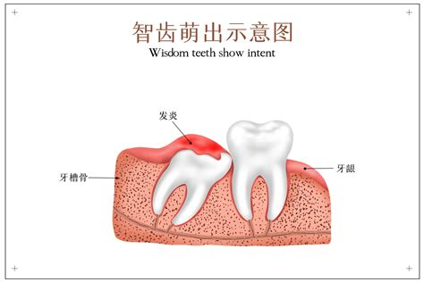
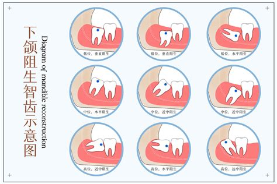

智齿冲突
危险程度
高风险
就医建议
及时就医检查
最佳就医时间
当出现疼痛肿胀，发现龋齿以及影响邻牙和反复发炎等情况时
什么是智齿冲突？
智齿冲突（Wisdom-tooth-conflict）是指智齿在萌生或生长过程中由于空间不足、位置异常或角度不正确等原因，导致与邻近牙齿、牙龈、颌骨等发生摩擦、压迫或嵌塞，从而引发一系列口腔问题的现象。
关键特征：
- 牙龈肿胀
- 牙齿疼痛
- 牙齿排列异常
- 张口受限
图示说明：
图1：智齿萌出示意图

上图展示了智齿萌出
图2：下颌阻生智齿示意图

上图展示了下颌阻生智齿
具体表现
智齿冲突症状
疼痛与不适
局部肿胀、疼痛，甚至影响咀嚼和张口功能
牙龈问题
清洁困难，智齿周围容易堆积食物残渣和细菌，引发牙龈炎、牙周炎等问题
牙齿排列紊乱
智齿的异常生长可能推动邻近牙齿移位，导致牙齿排列不齐，甚至需要正畸治疗
感染与囊肿
智齿部分萌出或阻生时，容易形成盲袋，滋生细菌，引发感染或囊肿形成
智齿冲突进展
早期（萌出初期）
智齿在萌出初期可能表现为部分萌出或完全萌出，但由于空间不足，容易导致部分阻生或嵌入牙龈下患者可能会感到轻微不适或疼痛，但症状通常较轻。
中期（阻生期）
阻生智齿是智齿冲突的主要表现形式，通常发生在智齿未能完全萌出时。由于智齿无法正常生长，会以扭曲或倾斜的方式生长，甚至嵌入牙龈下，形成盲袋，容易积聚食物残渣和细菌，引发感染。
晚期（并发症期）
晚期表现为智齿引发的严重并发症，包括冠周炎、颌骨感染、邻牙龋坏甚至牙齿移位等。
治疗方法
药物治疗
- 镇痛药物
- 抗生素
- 维生素补充
手术治疗
- 拔出智齿
- 微创拔牙术
- 冠周龈瓣切除术
物理治疗
- 冷敷
- 盐水漱口
- 激光治疗